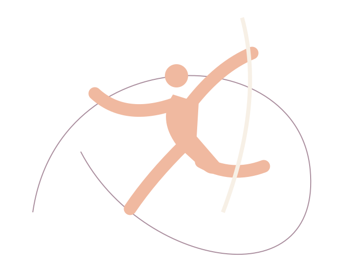
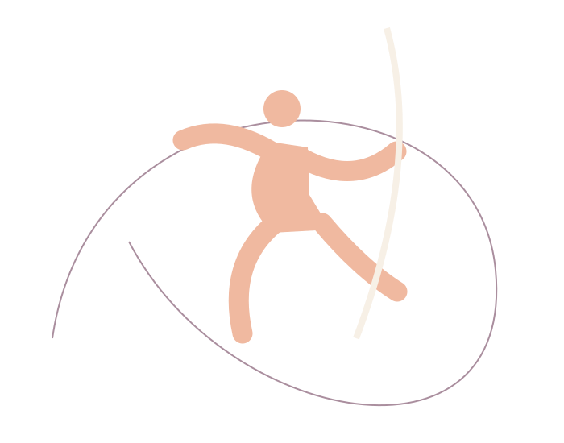
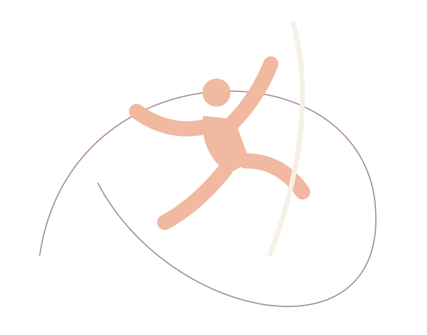

01 / Atstumas / ryšys
Tarp dviejų taškų
Koncepcinis pasirodymo eskizas
Du įsivaizduojami atramos taškai ir vienas kelias tarp jų. Šis eskizas tyrinėja, kaip pasikeičia erdvės pojūtis, kai figūra sustoja prieš kitą žingsnį.
FORMATAS / PATIRTIS / TAVO KRYPTIS
Pasirink formatą ir patirtį, peržiūrėk demonstracines galimybes ir parenk užklausos ruošinį.
UŽSIĖMIMŲ KONCEPCIJOS
Visi laikai yra demonstraciniai A, B ir C lapo variantai. Užsiėmimai nevyksta, vietos nerezervuojamos.
6 demonstraciniai pasiūlymai.
Susipažinimas su erdvės ir judesio santykiu.
Pažintinis · Pirmas žingsnisKūrybinio stebėjimo užduotys turintiems patirties.
Pažintinis · Turiu patirtiesPažintinė grupės kompozicijos idėja.
Maža grupė · Pirmas žingsnisGrupės pasirinkimų ir pauzių eskizas.
Maža grupė · Turiu patirtiesIndividuali pažintinio pokalbio koncepcija.
Individualus · Pirmas žingsnisIndividualios judesio idėjos aptarimo koncepcija.
Individualus · Turiu patirtiesTai kūrybinio pasirinkimo pavyzdys. Užklausą paruoši puslapio kontaktų lape; ji niekur nesiunčiama.
Pereiti prie užklausos ruošinio ↗KONTAKTŲ LAPAS
Pasirink užsiėmimą programoje. Pridėk savo mintį ir nukopijuok tekstą kitam pokalbiui.
Keisti pasirinkimą ↑Pirma pasirink vieną demonstracinį užsiėmimą.
TRYS PASIRODYMŲ KONCEPCIJOS
Originalūs kūrybiniai eskizai. Tai demonstracinė vertikali seka, ne vykstančių renginių skelbimai.

Koncepcinis pasirodymo eskizas
Du įsivaizduojami atramos taškai ir vienas kelias tarp jų. Šis eskizas tyrinėja, kaip pasikeičia erdvės pojūtis, kai figūra sustoja prieš kitą žingsnį.

Koncepcinis pasirodymo eskizas
Staigus linijos posūkis gali pakeisti visą kompoziciją. Eskize susitinka ilgas lankas ir trumpa pauzė, o iliustracija seka tik jai skirtą erdvę.

Koncepcinis pasirodymo eskizas
Ne kiekvienas judesys turi baigtis dideliu gestu. Šioje koncepcijoje svarbiausias trumpas tarpas: figūra lieka lengva, o žiūrovo akis pati užbaigia jos kelią.
KOLEKTYVO METODAS
Pradėk nuo to, kaip linija keičia tuščią erdvę.
Pasirink vieną mintį ir išskleisk ją mažu gestu.
Palik laiko įspūdžiui. Šis puslapis nepateikia fizinių pratimų instrukcijų.
KŪRYBINĖ MINTIS
Mes pradedame nuo linijos ir klausimo. Kiek vietos reikia gestui? Kada pauzė tampa kompozicijos dalimi? Šuolio studija – išgalvotas kolektyvas, šiame puslapyje tyrinėjantis šiuos klausimus originaliais vizualiais eskizais.